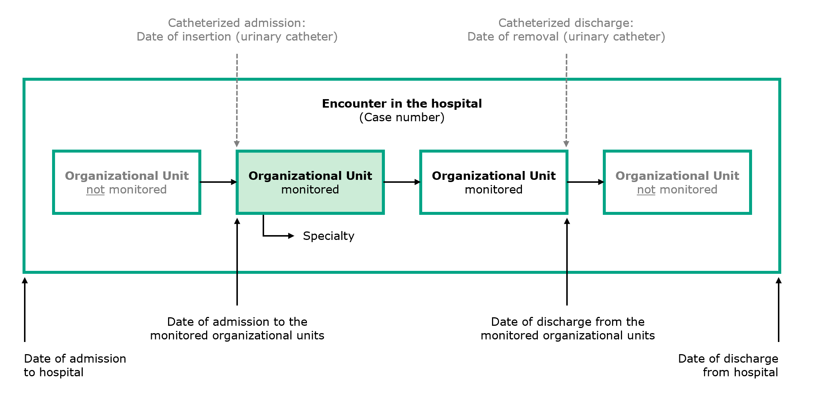

Swissnoso Implementation Guide (R4)
1.0.0 - STU 1

Swissnoso Implementation Guide (R4)
1.0.0 - STU 1

This page is part of the Swissnoso Implementation Guide (R4) (v1.0.0: STU 1) based on FHIR R4. This is the current published version. For a full list of available versions, see the Directory of published versions 
La signora Anna Meier, nata nel 1933, viene ammessa il 24.06.2021 nel reparto di chirurgia dell’ospedale Tannenwald. Per questa degenza stazionaria, l’amministrazione dell’ospedale apre un caso cui assegna il numero 14200210624.
La signora Meier viene operata come previsto il 01.07.2021. Prima dell’intervento, in reparto di degenza le viene applicato un catetere vescicale, successivamente rimosso il 04.07.2021. Poiché l’intervento si è svolto senza complicazioni, Anna Meier può lasciare l’ospedale il 08.07.2021.
L’ospedale Tannenwald trasmette i dati inerenti al caso della paziente Anna Meier a Swissnoso nell’ambito della CAUTI Surveillance.
Il signor Fridolin Müller, nato nel 1931, viene ammesso il 06.07.2021 al pronto soccorso del dipartimento medico dell’ospedale Tannenwald poiché il suo stato di salute è improvvisamente peggiorato. Viene aperto un caso con il numero 181521210706.
Fridolin Müller lamenta dei sintomi, ha la febbre e dolori al basso ventre, che si intensificano quando viene applicata una pressione. A fronte del sospetto di un’infezione del tratto urinario, si preleva un campione di urina. A causa dell’incontinenza e di un’ulcera da decubito sacrale, a Fridolin Müller viene applicato un catetere vescicale già presso il pronto soccorso. Dopo i primi chiarimenti, viene trasferito al reparto di degenza, dove preso migliora grazie a una terapia antibiotica. Il risultato di laboratorio conferma il sospetto: si tratta di un’infezione delle vie urinarie con i due batteri E. coli ed enterococchi con una conta batterica nelle urine >=10E5 UFC/ml. Il catetere vescicale viene rimosso il 09.07.2021, ma a causa di una ritenzione urinaria Fridolin Müller deve essere nuovamente cateterizzato il giorno stesso. Il 10.07.2021, Fridolin Müller può lasciare l’ospedale (dimissione cateterizzata, v. anche la figura sotto Overview organizational units).
L’ospedale Tannenwald trasmette i dati inerenti al caso del paziente Fridolin Müller a Swissnoso nell’ambito della CAUTI Surveillance.
La signora Giulia Rossi, nata nel 1943, viene ammessa il 08.07.2021 nel reparto medicina (specialità medicina generale) dell’ospedale Santa Maria. Viene aperto un caso con il numero 44371210708.
A causa di una ritenzione urinaria, nel reparto di degenza le viene applicato il giorno stesso un catetere vescicale. Poiché la paziente presenta dei sintomi, lamentando in particolare del dolore sovra pubico, il 09.07.2021 si procede alla rimozione del catetere e al prelievo di un campione di urina. L’analisi microbiologica indica la presenza di un batterio, E. coli con una conta batterica <10E5 UFC/ml. Si rinuncia quindi alla somministrazione di antibiotici.
Alcuni giorni dopo, il 14.07.2021, oltre al dolore sovra pubico Giulia Rossi presenta altri sintomi che indicano un’infezione del tratto urinario. Oltre al tenesmo vescicale, Giulia Rossi lamenta forti dolori quando urina e minzioni frequenti in piccole quantità. In considerazione del sospetto, il 14.07.2021 si procede a una nuova analisi microbiologica, che rivela nuovamente un batterio: un’infezione di E. coli con una conta batterica nelle urine >=10E5 UFC/ml. A Giulia Rossi vengono somministrati degli antibiotici e il 16.07.2021 viene dimessa dall’ospedale.
L’ospedale Santa Maria trasmette i dati inerenti al caso della paziente Giulia Rossi a Swissnoso nell’ambito della CAUTI Surveillance.
Il signor Jean-Luc Richard, nato nel 1945, viene ammesso il 10.07.2021 con dolori diffusi nell’alto ventre, nausea e febbre (38.1 °C) nel reparto di medicina dell’ospedale Bellevue, che assieme alla chirurgia e alla medicina intensiva partecipa alla CAUTI Surveillance. Viene aperto un caso con il numero 102938210710.
A seguito di una ritenzione urinaria, a Jean-Luc Richard viene applicato un catetere vescicale in reparto di degenza il giorno stesso. Nell’ambito di ulteriori chiarimenti, il 11.07.2021 gli viene diagnosticata un’infiammazione della cistifellea, e il 12.07.2021 Jean-Luc Richard viene trasferito in chirurgia (specialità chirurgia del tratto digestivo) per essere sottoposto a una colecistectomia. Dopo l’intervento sorgono delle complicazioni e il 13.07.2021 Jean-Luc Richard deve essere trasferito in terapia intensiva, dove rimane fino al 15.07.2021. Viene quindi trasferito di nuovo al reparto chirurgico, dove il 16.07.2021 gli viene rimosso il catetere vescicale. Jean-Luc Richard lascia l’ospedale Bellevue il 21.07.2021.
L’ospedale Bellevue trasmette i dati inerenti al caso del paziente Jean-Luc Richard a Swissnoso nell’ambito della CAUTI Surveillance.
Nel caso concreto del signor Jean-Luc Richard (UC 102938) viene presentata la situazione dell’ospedale Bellevue, che partecipa alla CAUTI Surveillance con singole unità organizzative e non come intero ospedale. La figura che segue mostra in forma generalizzata quali dati siano rilevanti per questi casi e come si riferiscano all’unità organizzativa/alle unità organizzative oggetto della sorveglianza.
I dettagli sulle unità organizzative sorvegliate figurano a pag. 9 del Manuale di sorveglianza.
Fig.: Overview organizational units
